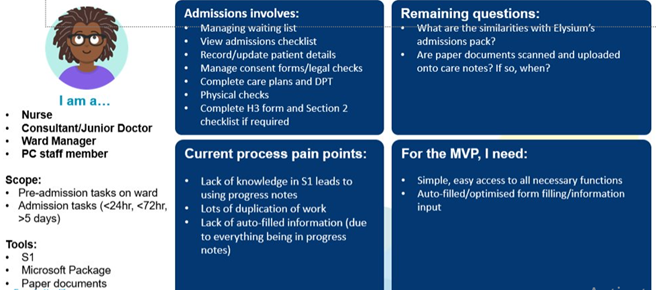
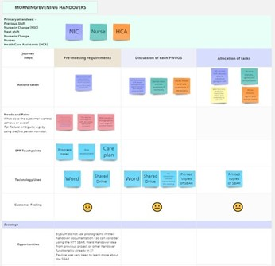
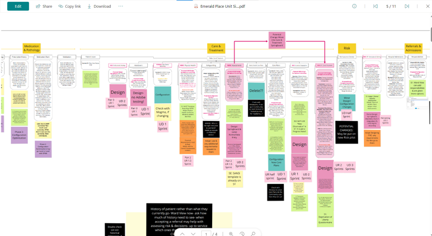
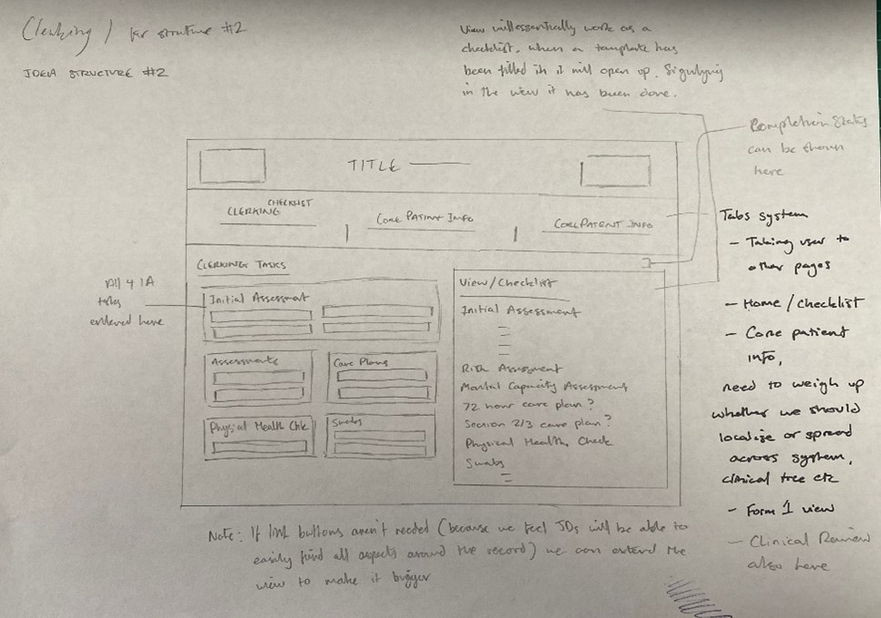
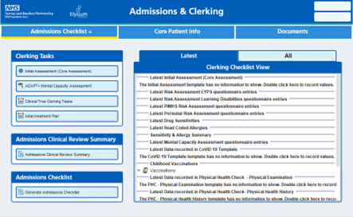

Emerald Place Project

Project Outline Statement
In November 2023, SABP will be opening a new 12 bed inpatient unit for young people, known as Emerald Place Clinic in partnership with Elysium Healthcare. This project will provide a digital EPR solution using SystmOne for the new CAMHS Tier 4 inpatient unit and will be used by both SABP and Elysium staff at Emerald Place. Using SystmOne as Emerald Place’s EPR will ensure a single electronic patient record that can be accessed and updated by all SABP Services providing care to a Young Person throughout the CAMHS care pathway. This new SystmOne Inpatient solution will also provide the blueprint to roll out new SystmOne units to other SABP Inpatient Services in future, as part of the Adapt+ programme.
The new digital solution using SystmOne was being developed to support the new CAMHS Tier 4 Inpatient Service and integration with existing SABP CAMHS pathways. Using SystmOne as a solution would ensure recording of information accurately & easily, creating an efficient workflow for staff. SystmOne provides a trusted, safe and secure EPR platform which will ensure good data quality from service launch and is expected to fulfil National data compliance requirements.
Date & Duration:
- January 2023 - June 2023 (Development & Prototype Build)
Research Artifacts
User Personas
Include Text Here
User Journey Maps
Include Text Here
Project Goals & Challenges
Pain Points
- Transferring information from Excel to SystmOne takes team administrators 2hrs per day and frequently leads to overtime
- Staff time for patient contact is significantly reduced due to the time taken to manually fill in SBAR information on Excel
- Some HTT localities abandoned the SBAR entirely due to its strain on the service
- Significant Information Governance (IG) risk of storing patient information outside the EPR
- Significant clinical risk due to duplicated information and mixing of patient information within Excel
- Difficulty determining who completed each document and when
Goals
- Support a more efficient handover process. Save time when completing the handover document and thus free up precious clinical time resulting in better patient outcomes
- Reduce duplication of information and remove any confusion as to which is the latest version of the SBAR
- Provide a single source of truth for patient data using SystmOne
- Safer storage of the information into the EPR, easily identifying who produced the document and when it was last updated
- Reduce the IG risk that comes from storing patient information outside of the EPR and ensures that all patient information is recorded against the patient record in the EPR
SystmOne out of the box
Include Video Here
This video displays the out of the box functionality provided by SystmOne. Without any design team intervention this is what can be configured within the system. The main drawbacks are as follows:
- Information is unclear and unstructured; buttons and clinical information can be easily missed and unnoticed. This design presents a clinical risk as patient information can be easily ignored or missed.
- When developments are applied screens can get busy and unusable very quickly. There is no awareness of design principles or designing for the benefit of the user.
- There is no consideration for Information Architecture (where information sits and why it logically sits there).
- Designs are not accessible, making information very hard to read.
- Actions are very hard to notice, the UI design does not support call to actions or prompting.
The work below will show you how we develop a product and implement our work within SystmOne to completely overhaul the out of the box functionality SystmOne provides. Making for a much smoother, more comfortable, and safer user experience.
My Role & Contribution
- Supported the development of the design aspects of this project
- Managed two UX Designers, organising testing sessions, product development and designer workload
- Enter more here
Working with our support teams
- App Support: to assist with the configuration of the new SystmOne Unit and build of the features and functionalities in SystmOne Live, ready to support the Unit after Go Live.
- Learning & Adoption: to provide training for all Emerald Place staff on the new Inpatient Unit, in addition to CYPS Services and the CAMHS Tier 4 Provider Collaborative Service.
- Digital Information Service: to understand the MHSDS reporting requirements and how these relate to the Strategic Reporting Extract from SystmOne.
- Information Governance: to ensure the SystmOne solution is compliant from an IG perspective and to support with the DPIA for the new Service.
- Digital Clinical Safety: to ensure the SystmOne solution is compliant from a Digital Clinical Safety perspective and to contribute to the approach for carrying out Digital Clinical Hazard Workshops, assessing and mitigating any risks associated with the EPR.
This is the demo EPR and ONLY uses test patients, not live/real patient data.
Our Trust uses SystmOne (Electronic patient record software) created by TPP for the NHS. Our Teams work using Agile Scrum and User Centred Design following GDS https://www.gov.uk/service-manual/service-standard
Alpha Phase
Architecture Maps
Enter Description Here
Sketches - Lo-Fi Designs
Enter Sketches Description Here
Enter Lo-Fi Description Here
How we measured Alpha Success
Enter description here
- Point 1
- Point 2
- Point 3
Beta Phase
Developing the MVP
Enter Description of the prototype. Show image below of the prototype
Include the video run through of the prototype below. Include description of what has been produced
Planned Product Benefits
- Enter bullet points here
- Enter bullet points here
- Enter bullet points here
Outcome & Handover
The Final Product
Enter Description Here
Enter List Description
- Point 1
- Point 2
- Point 3
Explain why the project was halted, explain the use it had to us in applying our work to future projects, developing elsewhere
What I learned from this project
Include brief description
- How to manage staff efficiently when there are serious deadlines
- How to manage staff under very stressful conditions. Putting staff emotions and comfortability at the forefront. When stress is seriously heightened this takes a toll on the energy and output of staff
- Using support efficiently, asking the right questions